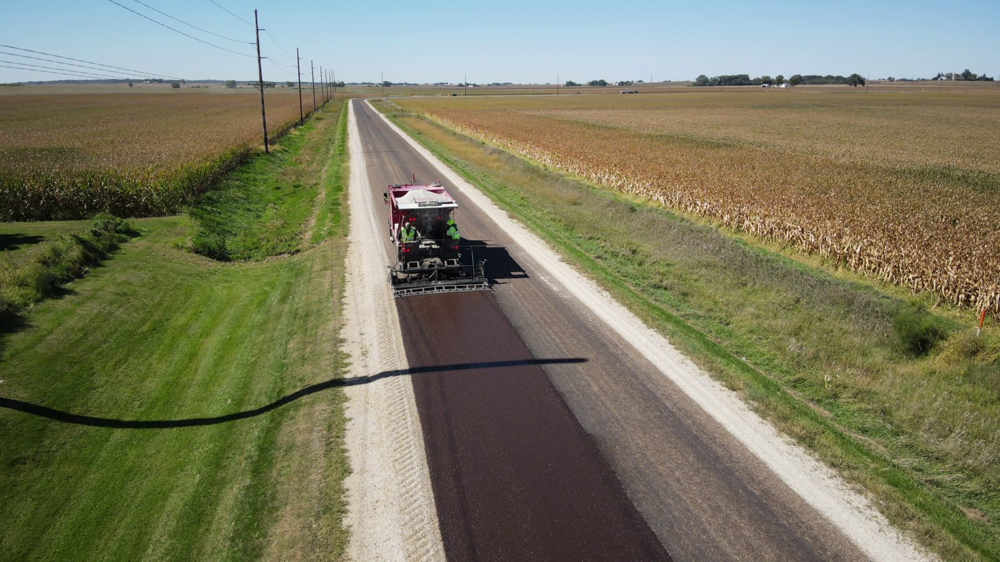
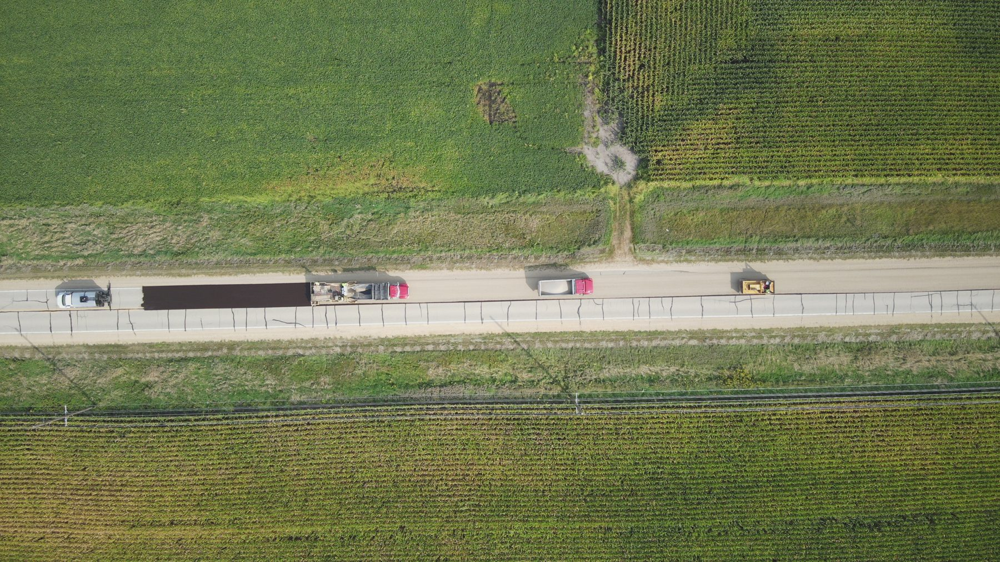
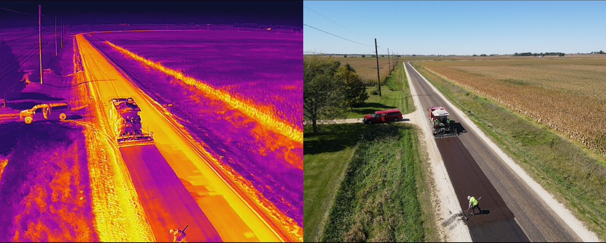

Construction, performance, traffic and climate data for county roads, brought together to track how preservation treatments perform and to predict future roughness (IRI) and remaining service life.
Lee and Clinton counties are the first counties on the portal. Any other Iowa county can be opened from the selector.
Each county view combines four data groups. Together with treatment records (CyRoads / SmartBox and IPMP, coming later) they feed the prediction model.
Average measured IRI of the pavement segments in each county. Click a county to open it.


